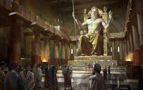
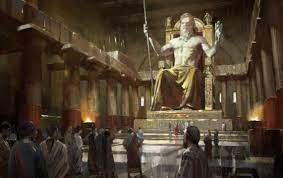

Артемидин храм у Ефесу (грч. Artemision) је био грчки храм посвећен богињи Артемиди, подигнут око 550. п. н. е. Данас се од храма могу видети само остаци темеља и место на којем се овај храм некада налазио, недалеко од турског града Селчука и на око 50 km од града Измира. Иако темељ храма потиче још из 7. века п. н. е, грађевина је конструисана и подигнута 550. године п. н. е. Новац за изградњу велелепног мермерног храма издвојио је лидијски краљ Крез, а храм је осмислио и пројектовао грчки архитекта Херосифрон. Храм је био украшен бронзаним статуама које су извајали најумешнији уметници тог доба: Фидија, Поликлеит, Кресилас и Фрадмон.
 
